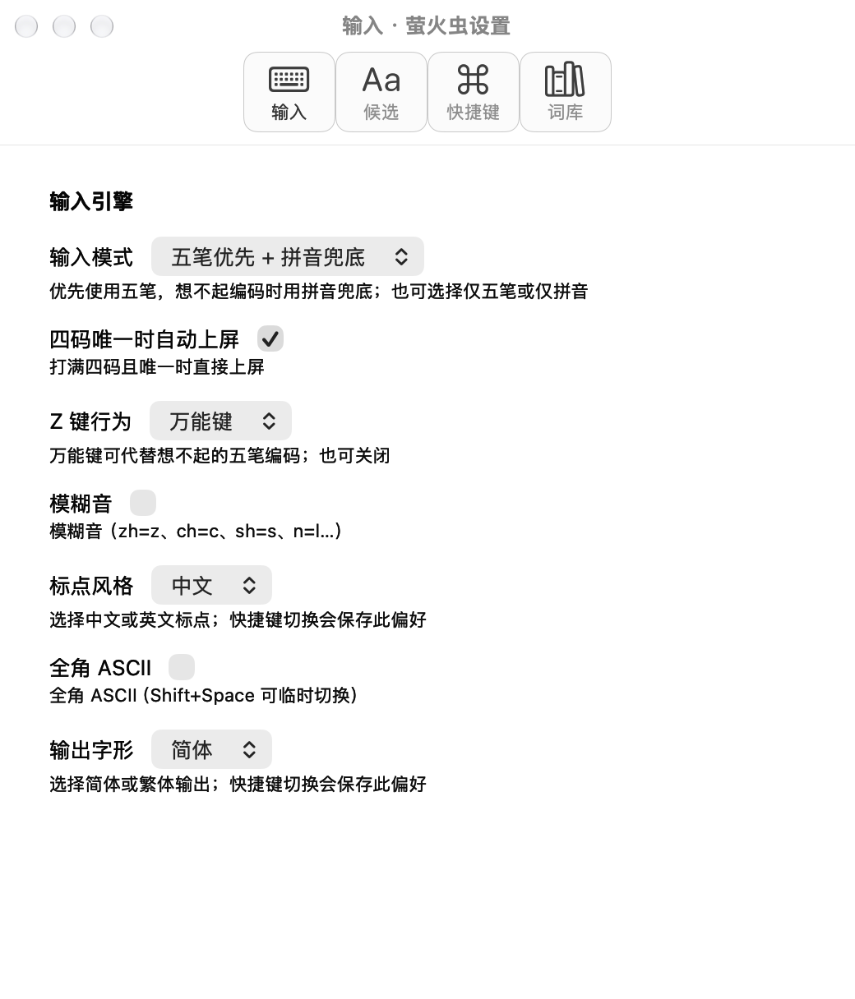
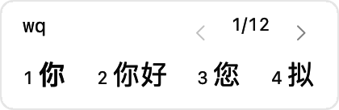
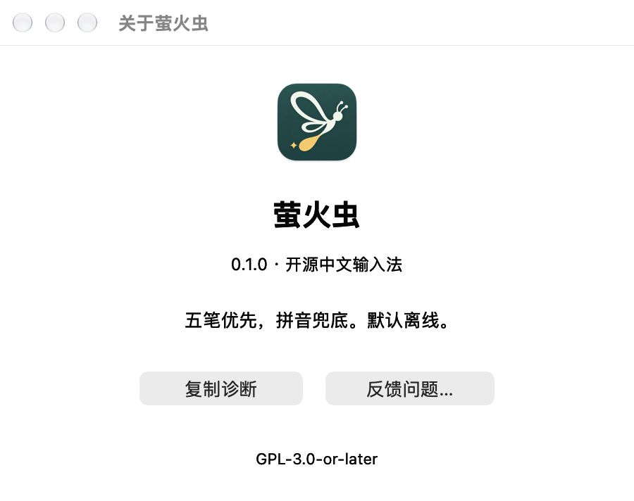
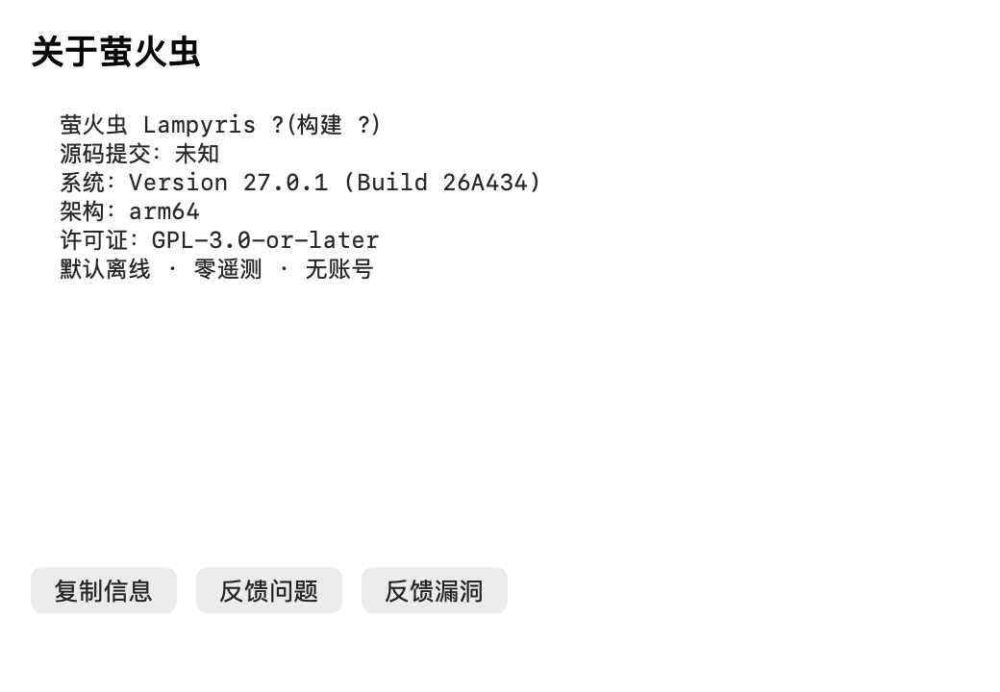

2. 输入设置
设计是分组、右侧对齐和选择性帮助；实现按Schema顺序逐项生成，控件紧跟标签，每项固定帮助。两图均原生、2×离屏，窗口宽650pt与520pt不同。


2026-10-15。仅比较设计参考、当前生产组件新渲染及源码；原生界面绑定工具超时，未取得当前活跃宿主截图。这不是完整实机UX审计，不给出虚构的还原度百分比。所有图按2像素＝1pt展示；不拉伸到相同宽度。
同为 wq / 你、你好、您、拟 / 1/12。设计为400×74pt；生产组件为210×86pt。17pt字体及首项加粗一致，几何/密度不同；常驻键位提示多18pt。
隔离变量：仅在私有渲染调用中不传键位提示，产品代码未修改。清爽度改善，但列间距和总体几何仍与原稿不同。

设计是分组、右侧对齐和选择性帮助；实现按Schema顺序逐项生成，控件紧跟标签，每项固定帮助。两图均原生、2×离屏，窗口宽650pt与520pt不同。

设计强调图标、产品名和简述；实现复用等宽诊断文本窗。实现图中的版本?来自独立测试Bundle，不能认定正式安装包版本缺失。两图均非活跃窗口；实现只截内容区，窗口chrome不能据此比较。

